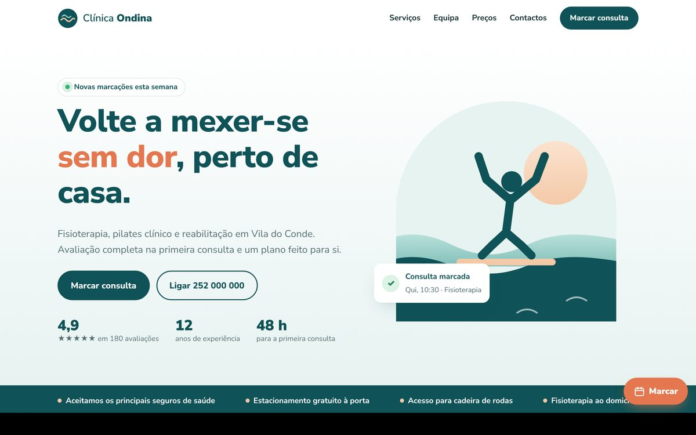

Martim
Cofundador · Engenharia Informática, ISEP
Estamos a aceitar os primeiros clientes, sem custos
Criamos sites simples, rápidos e bonitos para clínicas, alojamentos locais, restaurantes e outros negócios de Vila do Conde e arredores. Ponto a ponto, à medida de quem os vai usar.
Feito para negócios como o seu
Quem somos
A Bilros Web nasceu em Vila do Conde. Tal como as rendilheiras cruzam fios, ponto a ponto, nós cruzamos design e código para criar websites simples, rápidos e bonitos.
Somos o Martim e o Vasco, finalistas de Engenharia Informática no ISEP. Queremos ajudar os negócios da nossa terra a terem uma presença online à altura do que fazem: um site moderno, que funcione bem no telemóvel e que seja fácil de encontrar no Google.
Cofundador · Engenharia Informática, ISEP
Cofundador · Engenharia Informática, ISEP
“Um bom site, como uma boa renda, nota-se nos detalhes.”
Serviços
Tratamos da parte técnica para que se possa concentrar no que faz melhor.
Uma página ou várias, com design à medida da sua marca e pensado primeiro para o telemóvel.
Damos nova vida a sites desatualizados: mais rápidos, mais claros e com o conteúdo em dia.
Otimização para pesquisas locais e ajuda com o Perfil da Empresa no Google, mapa e horários.
Botões para ligar, WhatsApp, formulários e ligação às plataformas de reservas que já utiliza.
Ajudamos a escolher e configurar o seu domínio (por exemplo, .pt), com ligação segura https.
Atualizações de conteúdo, cópias de segurança e pequenas alterações, sem ter de se preocupar.
Como funciona
Encontramo-nos em Vila do Conde ou por videochamada, para conhecer o seu negócio e o que precisa.
Mostramos uma proposta de design antes de escrever uma linha de código. Só avançamos quando gostar.
Construímos o site, testamos no telemóvel e no computador, e afinamos tudo com o seu feedback.
Colocamos o site online e explicamos como nos pedir alterações sempre que precisar.
Primeiros clientes
Estamos a construir o nosso portefólio e queremos começar pelos negócios da nossa terra. Para os primeiros clientes, o site não tem qualquer custo. Em troca pedimos apenas duas coisas:
Se quiser um domínio próprio, esse custo é pago diretamente ao registo (normalmente entre 10 e 20 € por ano). As vagas desta fase são limitadas.
Depois desta fase, trabalhamos com preços justos e planos de manutenção mensal.
Portefólio
Sites de demonstração feitos por nós, para mostrar como pode ficar o seu. Os negócios são fictícios.

DemonstraçãoClínica de fisioterapia (exemplo): serviços, preços, equipa e marcação online em menos de um minuto.
Fotografias que vendem e reservas diretas, sem intermediários.
Menu sempre atualizado, horários e reservas num toque.
Perguntas frequentes
Sim. Para os primeiros clientes não cobramos o desenvolvimento do site. Pedimos apenas um testemunho ou carta de recomendação e autorização para mostrar o trabalho no portefólio. O único custo possível é o do domínio, se quiser um.
Não. Tratamos de tudo e explicamos o essencial em linguagem simples. Se quiser mudar um horário ou uma fotografia, basta enviar-nos uma mensagem.
Depende do tamanho do site. Um site de uma página costuma ficar pronto em poucas semanas, contando com as suas revisões.
Claro. Avaliamos o que já existe e propomos uma renovação: mais rápido, adaptado ao telemóvel e mais fácil de encontrar no Google.
Pode ficar com o site tal como está ou optar por um plano de manutenção mensal, em que tratamos das atualizações, cópias de segurança e pequenas alterações.
Contacto
Conte-nos sobre o seu negócio. Respondemos normalmente no próprio dia.
Vila do Conde, Porto · Trabalhamos com toda a região